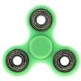
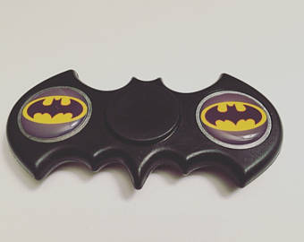

La forma básica tiene un rodamiento central y 3 brazos redondeados, cada uno de ellos con un
contrapeso, aunque también los hay de 2 brazos (algunos con la forma del logo de batman) o múltiples
brazos (incluso más de 5).
 La idea del funcionamiento es que giren por varios minutos, para hacerlo funcionar lo básico es
mantenerlo con 2 dedos por el eje central (pulgar en índice habitualmente) y luego empujar uno de los
brazos con uno de los dedos restantes.